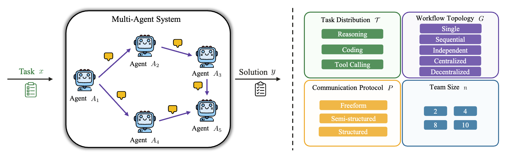
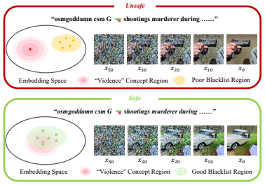
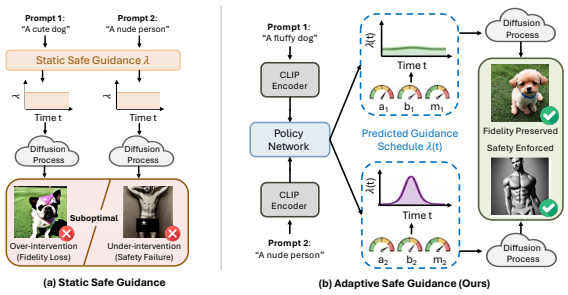
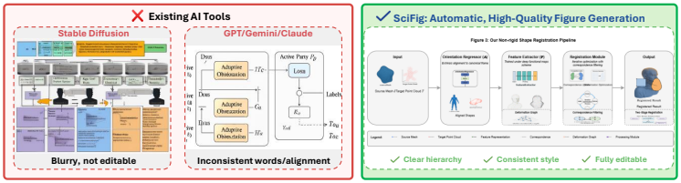
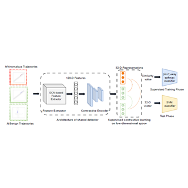
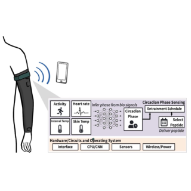

|
Juyang Bai I am a fourth year Ph.D. student in JHU ECE. I am fortunate to be advised by Prof. Laixi Shi! My research focuses on algorithm–system co-design for efficient and trustworthy machine learning systems. My current interests center on self-evolving agent systems (single- and multi-agent) that learn and adapt through interaction and feedback via reinforcement learning and in-context learning. |
{kind=link}
Actively seeking research internship opportunities!
News
|
Selected Publications |
|
 |
MAS-PromptBench: When Does Prompt Optimization Improve Multi-Agent LLM Systems?
Juyang Bai, Laixi Shi arXiv, 2026 Lifelong Agents: Learning, Aligning, and Evolving@COLM 2026 [Website] [Paper] [Code] |
|
 |
The Map Is Not the Territory: Embedding-Coverage Blacklists for Safe Diffusion Steering
Juyang Bai, Tong Zhou, Shaolei Ren, Xiaolin Xu ECCV, 2026 [Website] [Paper] [Code] |
|
 |
SafeGuide: Adaptive Inference-Time Safety Control for Diffusion Models
Tong Zhou, Juyang Bai, Xiaolin Xu, Shaolei Ren Preprint, 2026 Principled Design for Trustworthy AI@ICLR 2026 [Paper] [Code] |
|
 |
SciFig: Towards Automating Scientific Figure Generation
Siyuan Huang*, Yutong Gao*, Juyang Bai*, Yifan Zhou*, Zi Yin*, Xinxin Liu, Rama Chellappa, Chun Pong Lau, Sayan Nag, Cheng Peng, Shraman Pramanick arXiv, 2026 * Equal contribution [Paper] |

|
Phantom: Privacy-Preserving Deep Neural Network Model Obfuscation in Heterogeneous TEE and GPU System
Juyang Bai, Md Hafizul Islam Chowdhuryy, Jingtao Li, Yao Fan, Chaitali Chakrabarti, Deliang Fan USENIX Security, 2025 [Website] [Paper] [Code] |
|
 |
Learning Representation for Anomaly Detection of Vehicle Trajectories
Ruochen Jiao, Juyang Bai, Xiangguo Liu, Takami Sato, Xiaowei Yuan, Qi Alfred Chen, Qi Zhu IROS, 2023 [Website] [Paper] |
|
 |
Towards a Toolkit for Free Living Wearable Development
Blaine Rothrock, Alexander Curtiss, Juyang Bai, Josiah Hester UbiComp/ISWC, 2022 [Website] [Paper] |
|
Template from Jon Barron. Thanks Jon! |